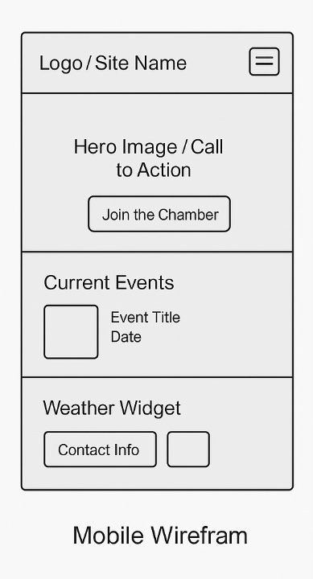
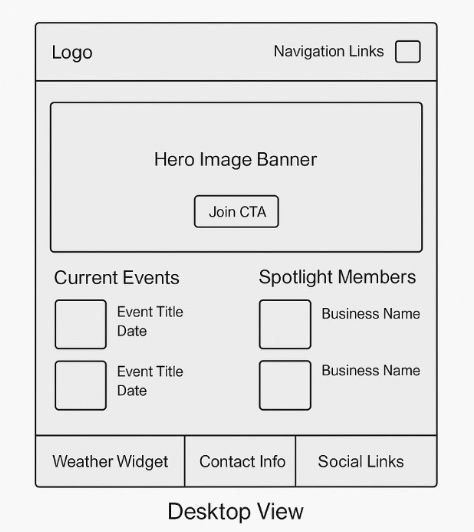

ACC
Accra Chamber of Commerce
This name represents a professional organization that supports and promotes local businesses in Accra, Ghana. It reflects the official and collaborative nature of the website.
Optional domain availability: accrachamber.org
Site Purpose
The website serves as a digital hub for local businesses, entrepreneurs, and residents in Accra. It will provide a member directory, event calendar, spotlight features for key businesses, and helpful resources for both new and existing members.
Scenarios
- How can I become a member of the Accra Chamber of Commerce?
- Which businesses are currently featured in the member spotlight?
- Where can I find upcoming networking events and seminars?
Color Scheme
- Primary Color - #003049 (Dark Blue): Used for headings, footer background, and navigation bar.
- Accent Color - #f77f00 (Orange): Used for call-to-action buttons and highlights.
- Background Color - #fdf0d5 (Light Cream): Used as the main page background for readability.
Typography
- Headings: Merriweather (serif) — for professional and formal look.
- Body Text: Open Sans (sans-serif) — for readability across all devices.
Wireframes
Mobile View
Desktop View
Note: Wireframes are conceptual and may change slightly during development.